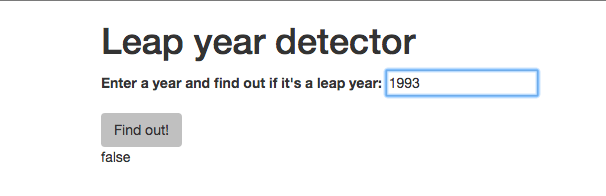
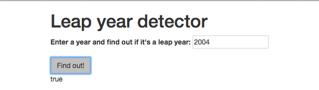
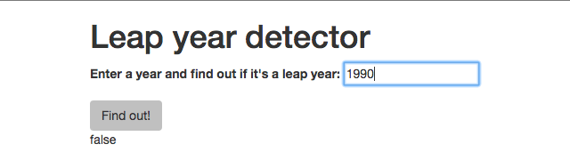
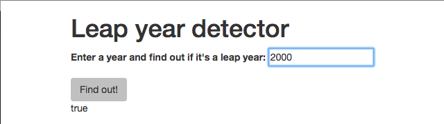

Tuesday: Leap Year Exercise
Leap Year Part 1
Now that we know about the behavior-driven development, let's walk through creating an application using the behavior-driven development process together. Taking time to learn how to identify and code individual behaviors now, while our projects are still relatively small, and tackling larger projects will be that much easier later on.
Separation of Logic
A brief reminder: As discussed previously, new programmers often mistakenly combine business (back-end) and user interface (front-end) logics . User interface logic includes code that handles event listening, user input, and DOM manipulation. Business (back-end) logic evaluates and manages data. Business logic may be called by user interface (front-end) logic but they should otherwise be two very separate areas of our code.
As our projects continually grow in size and complexity, continue writing clean, professional code by keeping these two logics separated. If necessary, review the Business and User Interface Logic (Links to an external site.) lesson from last week.
Application Overview
In the next two lessons we will write a program that takes a year, provided by the user, and returns whether or not that year was (or will be) a leap year. Let's briefly cover what this application will look like:
Business Logic
The business logic (back-end) of our application will evaluate whether the value provided is a leap year and will return true or false accordingly. Remember, business logic does not care how it is used and can operate independently of any user interaction. It happens in the 'back-end' or 'behind the scenes'.
User Interface Logic
The user interface (front-end) logic of the application will collect input from the user, call our business logic function, and display the results from the business logic back on the web page. Remember, the user interface logic does not care how the business logic works behind the scenes. All the user interface logic must know is that there is a leapYear() function it may call that takes one argument and returns a boolean.
Behavior Driven Development Process
Now let's walk through how we would code this application using the principles of behavior-driven development:
Identifying Behaviors (also known as "Specifications")
The first step in behavior-driven development is to identify small, individual behaviors the program should demonstrate. And you don't have to think of all of them at the beginning. It's entirely alright to add to your list of behaviors/specs/specifications as you think of additional behaviours.
Also, always begin with the simplest possible behavior. In the previous lesson we created a table of specs, or behavior examples, including input and output examples that demonstrate what each behavior should look like in action:

Note: Know that your own specs aren't required to be in a table. In the Intro to Programming class here at Moringa School, we will place specs in our project's README.md file. A simple list of behaviors with an input/output example for each is just fine.
Writing Tests
The next step in BDD is to translate your first "plain English" spec into a coded spec, using tools specifically designed for this purpose. Here at Moringa School you will learn how to code automated tests in the core program. Until then we will test our applications manually by inserting our example input into the application and double-checking that we receive the correct output.
To test manually, we'll first need to build a basic front-end that includes a form to submit values. Later on when we have the ability to write coded tests, we will not build the user interface until the business logic is in place and passes all tests.
Writing Code
Let's create a project directory called leap-year and initialize a git repository within it to track our changes. We'll add a README with details about our project, and our list of plain English specs. We'll also add js and css folders.
HTML
Let's first construct a basic web page where we may enter sample input into our program.
Our HTML page needs a link to the jQuery library, a link to our scripts.js file, a form to collect input, and a div to display the program's output. We'll also include some Bootstrap:
<!DOCTYPE html>
<html>
<head>
<link href="css/bootstrap.css" rel="stylesheet" type="text/css">
<link href="css/styles.css" rel="stylesheet" type="text/css">
<script src="js/jquery-1.12.0.js"></script>
<script src="js/scripts.js"></script>
<title>Leap year detector</title>
</head>
<body>
<div class="container">
<h1>Leap year detector</h1>
<form id="leap-year">
<div class="form-group">
<label for="year">Enter a year and find out if it's a leap year:</label>
<input id="year" type="text">
</div>
<button type="submit" class="btn">Find out!</button>
</form>
<div id="result">
</div>
</div>
</body>
</html>
User Interface Logic
Next, we'll need some jQuery user interface logic that will retrieve user input from our form, and call our business logic leapYear() function (which we will write momentarily). After the business logic runs, it will also be responsible for displaying results:
$(document).ready(function() {
$("form#leap-year").submit(function(event) {
event.preventDefault();
var year = parseInt($("input#year").val());
var result = leapYear(year);
$("#result").text(result);
});
});
Here we have attached a submit listener to our form. When this form is submitted, we assign the value the user enters to the variable, year.
Then, we call the leapYear() function (which we will write momentarily), pass it the year variable as an argument, and assign the return value (true or false) to the variable result. Even though we haven't written the leapYear() function yet, we already know from our specs that it must take a number and return true or false. This is yet another benefit to identifying and listing out anticipated behaviors before we begin coding.
Now, let's make sure our application can display a result to the user. For now we'll simply display the returned boolean value (currently assigned to the variable result) with the line $("#result").text(result);.
Business Logic
To start coding our business logic using the behavior-driven development process, we'll take our plain English specifications (also known as "specs" or "behavior examples") and begin implementing code that does each of these behaviors. We always want to begin with the simplest possible example that requires the least amount of code to implement, and focus on only one behavior at a time.

Hint: Often if we have a number of conditions that will be evaluated, the first behavior is what will ultimately be the else statement when none of the conditions are true. In our leap year application, the first behavior is returning false for a year that is NOT a leap year, which means it is not divisible by 4, 100 or 400.
Now, in our scripts.js file, we will add the least amount of code to implement the first behavior on our list:
var leapYear = function(year) {
return false;
};
// jQuery user interface logic here.
Does the code above seem odd? We haven't even checked to see if the year is a leap year, we just return false no matter what. But remember, we're only writing just enough code to make our one, singular, most simple behavior pass. If we began checking what the number was divisible by, we'd actually be getting ahead of ourselves!
This may feel like overkill for such a small behavior, but if you develop good BDD habits now on these easier programs, you'll be good at it when you get to more difficult situations. Remember, one behavior at a time, even if that behavior is very, very simple.
Testing our Spec
Now that we've isolated the most simple behavior possible, and written just enough code to make that one single behavior present in our application, let's manually test it out!
Remember, the first specification we are testing is that the application returns false for a year that is nota leap year. Our example input was 1993, and our anticipated output was false. Let's launch our page in the browser and see what happens!
We can enter 1993 into our form and submit....

And look, our program is returning false, which is the exact behavior we outlined in our first specification. Our first spec passes!
Let's commit. When following the BDD process you should commit after each passing spec.
Repeat!
Now that our first spec passes when tested manually, we simply move onto the next spec and repeat the process!
Our next behavior details that our program should return true for any year divisible by 4, since that makes it a leap year. Although we know that years divisible by 100 and 400 will also need to be considered, we must focus on one spec at a time. Therefore, we are only going to add code to check whether the provided year is divisible by 4. We'll get to the rest later.
Again, we'll add just enough code to make this second specification pass. In this case, we can just add a simple conditional:
var leapYear = function(year) {
if (year % 4 === 0) {
return true;
} else {
return false;
}
};
// jQuery user interface logic here.
Now, let's manually test this behavior too. Referring back to our list of specs, the example input for this second specification was 2004, and we anticipated the output true.
And look! If we refresh our application and submit the year 2004, we receive 'true':

Again, we will commit after this additional passing spec.
Time to tackle our next specification: We decided that our application should return false when the provided year is divisible by 100, because that means it is not a leap year. We'll add the smallest amount of code to create this behavior:
var leapYear = function(year) {
if (year % 100 === 0) {
return false;
} else if (year % 4 === 0) {
return true;
} else {
return false;
}
};
// jQuery user interface logic here.
And, we can refresh the application and manually test this behavior. Our example input was 1900, and we expected to receive the output false.

And look, it works! Let's commit again.
Refactoring
As you work through your specs, implementing each individual behavior one-by-one, you may find your code becoming a tiny bit redundant. That's okay! Pausing to refactor along the way is entirely alright in the BDD process. In fact, it's encouraged!
Can we refactor our application's business logic to make it efficient or easy to read? We currently have two different places returning false. Let's refactor our code so that a single evaluation may check whether the year is divisible by 4 or 100. We'll change our 100 condition to use the not operator ! so it also returns true.
var leapYear = function(year) {
if ((year % 4 === 0) && (year % 100 !== 0)) {
return true;
} else {
return false;
}
};
// jQuery user interface logic here.
Great! We'll commit one more time.
Implementing Additional Behaviors
We have one last spec on our current list. Our program should return true for years divisible by 400, since that means they are a leap year. You guessed it, we'll add just enough code to add this functionality to our application, therefore making this last spec "pass":
var leapYear = function(year) {
if ((year % 4 === 0) && (year % 100 !== 0) || (year % 400 === 0)) {
return true;
} else {
return false;
}
};
// jQuery user interface logic here.
Our example input for this spec was 2000, and we expected our application to return true, since 2000 was a leap year. Let's test it out:

Perfect! We've successfully coded all behaviors outlined by our list of specifications. We know each spec passes, because we received our intended outputs for each individual input.
In the next lesson we'll add additional user interface logic to our leap year application.
Leap Year Part 2
In the previous lesson, we wrote and tested the business logic for our leap year application. We know our program is successfully demonstrating all necessary behaviors because all of our specifications are passing! Additionally, because we made sure to implement the least amount of code to make each spec pass, and refactor along the way, we have clean, easy-to-read code. Perfect!
Now that our business logic is in place, let's include additional user interface logic.
Business Before User Interface
In the core program you will learn how to write coded, automated tests to assist in the BDD process. When these tools are available we will not write user interface logic until all basic back-end logic is present and passes specs.
Because we're testing manually in Intro to Programming, we had to begin with basic HTML and user interface logic to see our results. This is absolutely alright for now, just know that user interface logic should not be written until after business logic is complete in the core program.
User Interface
As mentioned, we simply created the bare minimum user interface to allow us to manually test our application. Now that all necessary business logic is present, and passes all of our tests, let's add more.
We'll spruce up the output section of our page (the result div) so that we can present the user with a descriptive message instead of a terse true or false:
<!DOCTYPE html>
<html>
<head>
<link href="css/bootstrap.css" rel="stylesheet" type="text/css">
<link href="css/styles.css" rel="stylesheet" type="text/css">
<script src="js/jquery-1.12.0.js"></script>
<script src="js/scripts.js"></script>
<title>Leap year detector</title>
</head>
<body>
<div class="container">
<h1>Leap year detector</h1>
<form id="leap-year">
<div class="form-group">
<label for="year">Enter a year and find out if it's a leap year:</label>
<input id="year" type="text">
</div>
<button type="submit" class="btn">Find out!</button>
</form>
<div id="result">
<p><span class="year"></span> is <span class="not"></span> a leap year.</p>
</div>
</div>
</body>
</html>
We'll add CSS to hide the div that will display the result until the evaluation is completed:
#result {
display: none;
}
Then, we'll update our user interface logic to appropriately fill the spans in our HTML based on the value of result:
// business logic
var leapYear = function(year) {
if ((year % 4 === 0) && (year % 100 !== 0) || (year % 400 === 0)) {
return true;
} else {
return false;
}
};
// user interface logic
$(document).ready(function() {
$("form#leap-year").submit(function(event) {
event.preventDefault();
var year = parseInt($("input#year").val());
var result = leapYear(year);
$(".year").text(year);
if (!result) { // same as writing if (result === false)
$(".not").text("not");
} else {
$(".not").text("");
}
$("#result").show();
});
});
In the code above, we do the following:
- Add the contents of the
yearvariable into a span with the classyear. - If the
resultvariable isfalsewe set the text of thenotspan to "not", so that our page will read "is not a leap year". - If the
resultvariable istruewe instead empty thenotspan, so that our page will read "is a leap year". - Finally, we show our entire
resultdiv so that the user can see their results.
Separation of Logic
It is important to understand why this code belongs in user interface logic. We could theoretically just have our business logic return a formatted string that said "____ is a leap year", or "_____ is NOT a leap year", but this seriously mixes up business and user interface logics. After all, we're displaying our results in sentence format for the user's sake. It's therefore user interface logic.
Additionally, what if we later wanted to change the message containing the user's results? We would have to modify the business logic to change the display! This may not seem like a big deal in such a small app, but imagine doing something similar in an application with thousands, even millions of lines of code! You'd have to unravel countless lines of back-end logic just to change the way something is displayed to the user.
Focus on developing good habits early on, even if they seem like overkill for these smaller projects. Not only will this make it easier to navigate your own code as our projects grow in size and complexity, but it will make it easier for other developers to collaborate with you, and is considered far more professional.
Always keep your business and user interface logic separate. Follow the BDD process to clearly outline your program's intended behaviors. Focus on one behavior at a time. And write the minimum code to make each spec pass. Developing these habits now will make tackling the complex applications you'll soon build far easier!
Practice: Leap Year, Pig Latin
Note: Between now and next Monday, begin brainstorming potential group project ideas.
Goal: Focus on breaking your project down into small behavior examples and coding one behavior (also known as a "specification" or "spec") at a time. Make a list of specifications with input and output examples before writing any code. Also, as our projects grow in size, continue to practice good organization by keeping business logic and user interface logic distinctly separate.
Warm Up
Pretend you have an application that counts the number of vowels in a string. This application has specs detailing each behavior it must exhibit. However, they're out of order! Reorder the following list of specs from the simplest possible behavior to the most complex behavior with your partner. Consult with other pairs, if necessary:
- The program recognizes vowels in a multiple-word sentence, regardless of capitalization.
- Input Example: "CATS CATERED THE EVENT"
- Output Example: 7
- The program recognizes a single vowel in a multiple-character word.
- Input Example: "cat"
- Output Example: 1
- The program recognizes a single vowel.
- Input Example: "a"
- Output Example: 1
- The program recognizes multiple vowels in a single word.
- Input Example: "cater"
- Output Example: 2
- The program recognizes a single vowel, regardless of case.
- Input Example: "A"
- Output Example: 1
- The program recognizes all vowels in a multiple-word sentence, regardless of inconsistent capitalization.
- Input Example: "CaTS CATEReD ThE EveNT"
- Output Example: 7
- The program ignores non-alphabetical characters, since they cannot be vowels.
- Input Example: "4%"
- Output Example: 0
- The program recognizes vowels in a multiple-word sentence.
- Input Example: "cats catered the event"
- Output Example: 7
Code
Leap Year
Follow along with the leap year lessons to build an application that identifies whether a given year is a leap year. Make each of the specs detailed in the leap year lessons "pass" (ie: your program returns the expected output for the expected input).
Specs from Leap Year Lessons
- The program should return when a year is not a leap year.
- Input Example: 1993
- Output Example: false
- The program should return 'true' for years divisible by 4, since those are leap years.
- Input Example: 2004
- Output Example: true
- The program should return 'false' for years divisible by 100, since those are not leap years.
- Input Example: 1900
- Output Example: false
- The program should return 'true' for years divisible by 400, since those are leap years.
- Input Example: 2000
- Output Example: true
All specs should be listed in the project's README.md file.
Pig Latin
Write a Pig Latin translator or should we say an "igPay atinLay anslatorTray"? Read all instructions carefully before beginning.
How Pig Latin Works
First, here are the rules of Pig Latin:
-
For words beginning with a vowel, add "ay" to the end.
-
For words beginning with one or more consonants, move all of the first consecutive consonants to the end, and add "ay".
-
If the first consonants include "qu", move the "u" along with the "q". Don't forget about words like "squeal" where "qu" doesn't come first!
-
For words beginning with "y", treat "y" as a consonant.
Instructions
-
Before writing any code, make a list of specs detailing each behavior your program will have. Start with the simplest possible behavior, and slowly move up in complexity. To get you started, the first two specs are provided below.
-
Have at least two other pairs check your specs before you begin coding. Ensure that each possible behavior is represented by a spec, and that they are ordered from simplest to most complex.
-
Place your specs (and their example inputs and outputs) in your project's README.
-
Create a basic user interface that allows your application to accept user input, and display output. This will allow us to manually test each spec.
-
Slowly add business logic. Begin by focusing on the behavior outlined in your first, most simple spec. Implement the least amount of logic necessary to create this behavior.
-
Manually test this behaviour by inputting the example input described by the spec into your application, and confirm you receive the correct output.
-
Once behavior outlined by the first spec is successfully implemented, repeat steps 5 - 7 for each subsequent spec. Do not move onto the next spec until the previous one passes.
Helpful Hints
When you get to consonants, don't try to solve it all at once. Instead, start with an example of a word that only has one consonant; then a word with two consonants; then a word with three; and then tackle the exceptions to the rule, like "qu" and "y". Once your application can successfully translate single words, work on translating entire sentences. The .slice() string method may also come in handy.
Specs
To get you started, below are the first two "plain English" specs:
- The program does nothing to non-alphabetical characters, since they do not contain consonants or vowels.
- Example Input: 3
- Example Output: 3
- The program adds "ay" to single-letter words beginning with a vowel.
- Example Input: i
- Example Output: iay
Further Exploration
If you are done with today's excercises, attempt the following as you explore further with regex.
Refactor with Regular Expressions
Refactor your code for the projects above using regular expressions (Links to an external site.). A handy place to try using regular expressions before implementing them is at Rubular (Links to an external site.).
Bases
Binary: Write a method to convert numbers from binary to decimal. The input should be a string, and the output an integer. Decimal is the normal system we use for counting. We start at 0, increment until we reach 9, and then reset back to 0 and add another number to the left. In binary, we also start at zero, but we only increment until we reach 1. Then we reset back to zero and add another number to the left.
Here are some example of numbers in decimal and binary:
Decimal Binary
0 0
1 1
2 10
3 11
4 100
... ...
Trinary: You get where I'm going, right?
Hexadecimal: Here's what happens after 9...
Decimal Hexadecimal
... ...
9 9
10 a
11 b
12 c
13 d
14 e
15 f
16 10
17 11
... ...
If you get this far, write a method that takes two arguments: the number to be evaluated and the base you would like it to be evaluated in.
Peer Code Review
- Is the business logic and user interface logic distinctly separate?
- Are variable names descriptive and in lower camelCase?
- Does the code have proper indentation and spacing throughout?
- Are for loops being used correctly?
- Are
forEach()loops being used correctly?
- Is code broken down into plain English specs?
- Do these specs accurately represent the behaviours required of the program?
- Are there any additional specs you can think of?
- Is the business and user interface logic well-separated?
- Does the application work as expected?